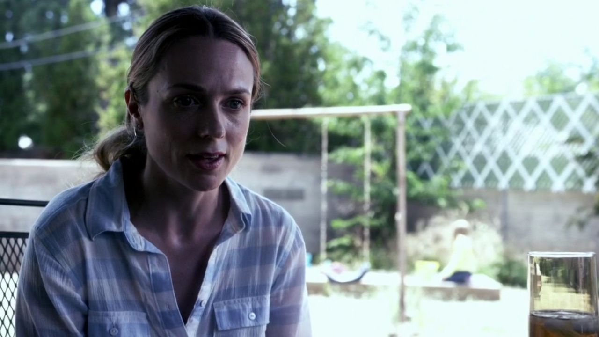
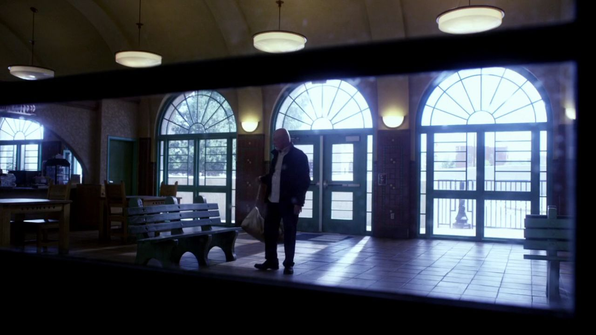
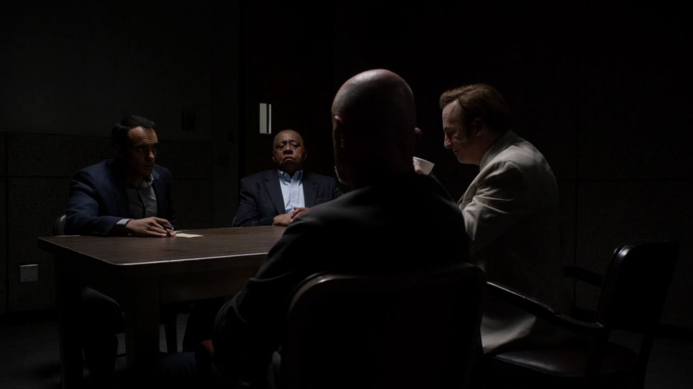
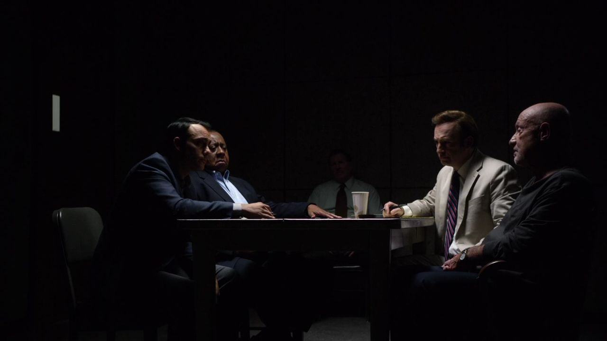
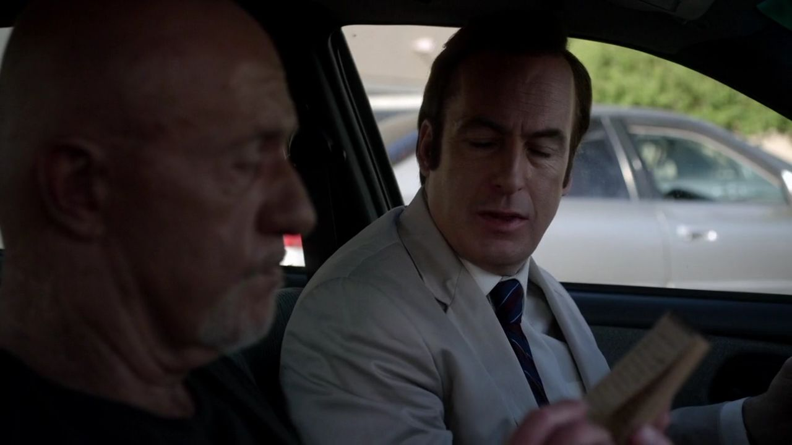
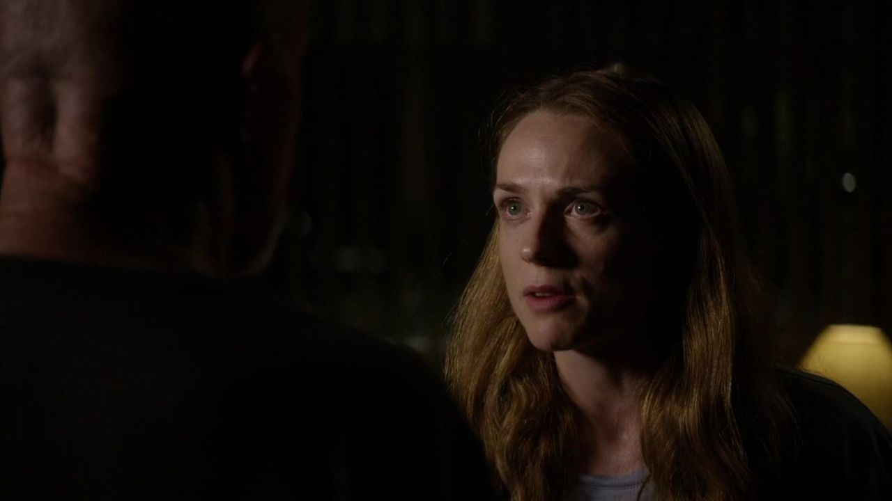
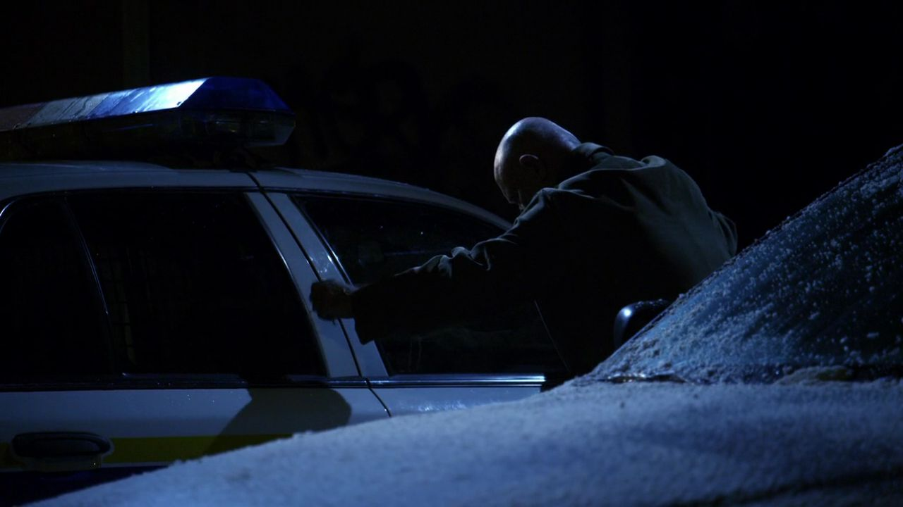
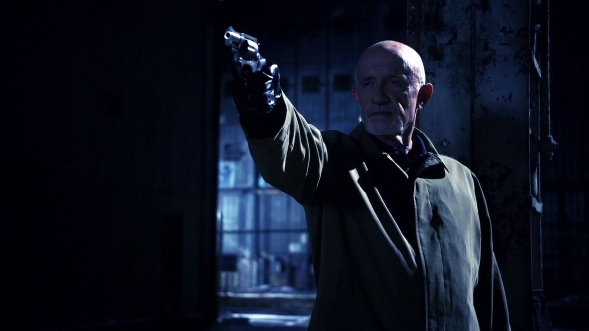
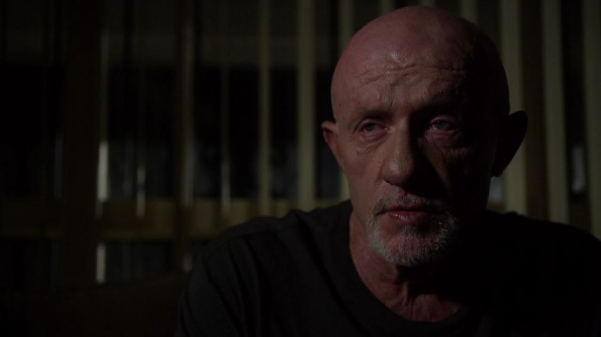

01
斯泰茜家 / 后院
他们都在谈马蒂，却没有说出同样的问题。

剧情事实迈克与斯泰茜谈起已故的儿子马蒂。她仍困惑丈夫临死前的变化，两人在亲人离世后的相处里保持着距离。 [1][2]
这一场为什么重要 · 个人解读
对迈克，提起儿子会碰到自己不愿讲的选择；对斯泰茜，不知道原因让哀伤里多了一层对丈夫的疑问。沉默可以使一个人暂时撑住，也可能让另一个人独自承担更大的不确定。
因此 →迈克的身体需要处理，家事也没有因此得到回答。

风骚律师 · 第一季第 06 集
收费亭外的沉默，终于有了来处。
他曾劝儿子妥协，却没能把儿子留下。
剧透边界 截至 S01E06，含本集结尾
10 个剧情节点 · 8 位人物 · 04 组冲突本集把叙事交给迈克。费城警探的来访，把儿子马蒂之死、两名警察的死亡和一次带伤抵达阿尔伯克基的行程连起来。吉米提供的帮助让调查暂时转向另一条信息路径，迈克面对儿媳时却无法再只用沉默保护自己。他需要说出的，不仅是谁杀了谁，还有自己曾经劝儿子成为怎样的人。
读这一集，跟住三件事父子之间的信任 / 腐败怎样要求人人参与 / 复仇之后仍剩什么

三幕梳理本集。每一场都区分剧情事实与个人解读，把行动、动机和后果连起来。
伤口、家人和警探，把沉默围住。

剧情事实迈克与斯泰茜谈起已故的儿子马蒂。她仍困惑丈夫临死前的变化，两人在亲人离世后的相处里保持着距离。 [1][2]
对迈克，提起儿子会碰到自己不愿讲的选择；对斯泰茜，不知道原因让哀伤里多了一层对丈夫的疑问。沉默可以使一个人暂时撑住，也可能让另一个人独自承担更大的不确定。
因此 →迈克的身体需要处理，家事也没有因此得到回答。

剧情事实迈克找兽医卡尔德拉处理肩部枪伤。卡尔德拉也让他知道，如果需要，可以接触某些额外工作。 [1][2]
在这里，医疗帮助与不公开的关系网络相接。迈克依靠的是具体人和谨慎交换，而不是把全部经过交给一个正式机构。这个入口先被留下，本集并不需要提前把后来每一份生意都搬到诊所里。
因此 →故事回到警探来访，伤口开始进入案件的时间线。

剧情事实桑德斯与阿巴西询问马蒂及其搭档霍夫曼、上司芬斯基的死亡。迈克要求由吉米担任律师，对关键经历保持克制。 [1][2]
吉米第一次面对这个收费员的另一种身份：一个知道警方怎样问话的前警察。桌面上的程序看似清楚，桌下却压着父亲与同僚的旧关系。迈克不只是怕说漏，他也知道哪些信息会让谁被继续追问。
因此 →他需要知道警探究竟掌握了什么。
迈克需要辩护，也需要知道谁掌握了什么。
看清父亲不愿说出的那段过去。

剧情事实迈克希望吉米把咖啡洒到阿巴西身上，好借清理衣服的机会拿到笔记本。吉米起先反对，最终配合了这个安排。 [1][2]
职业帮助与额外动作之间的线，再次被一个小小的物件穿过。吉米并未亲自经历费城旧事，却为迈克获取信息制造了条件。这个动作也让“只是来当律师”的说法变得不再完整。
因此 →笔记本到了迈克手里，调查另一端的联系也被看见。

剧情事实迈克从笔记中得知，斯泰茜发现马蒂藏在行李夹层里的钱，并联系警方，希望查清钱与丈夫死亡的关系。 [1][2]
她的求助并非为了伤害迈克，而是想结束对丈夫的猜测。迈克却需要面对一个事实：自己越少说，别人越会用别的渠道追问。保护家人不能只由他决定哪些事永远不提。
因此 →他必须回到儿媳面前，回应她真正不安的部分。

剧情事实斯泰茜追问马蒂去世前的一通深夜电话和那笔钱。迈克激烈否认儿子是腐败警察，坚持维护儿子的品格。 [1][2]
问题表面指向赃钱，迈克听见的却是儿子可能被重新定义。他护住儿子的方式带着愤怒，也暴露这不是一段能够被从容复述的过去。斯泰茜并未背叛逝者，她同样想知道自己所爱的人究竟经历了什么。
因此 →回答必须退回费城，说明他当时做过的选择。

剧情事实回忆里，迈克在酒吧外对霍夫曼和芬斯基的警车预先做了准备，随后进酒吧，装作喝醉并说出自己知道他们的事。 [1][2]
这一顺序很重要：他没有在一时醉怒中偶然获得反击机会，而是计算过接下来可能发生的事。专业能力让他能够安排危险，却不因此把复仇变成一场没有代价的正义仪式。
因此 →对方以为他失去警惕，开始按自己的方式处理威胁。
求证与反击都无法让失去变得简单。
终于把自己放回儿子的故事里。

剧情事实霍夫曼和芬斯基接近看似醉酒的迈克，送他上车。迈克指出两人杀了马蒂，随后被带往偏僻处。 [1][2]
熟人间的称呼、搭车和搀扶，本应是照顾的动作，却能被用来取得控制。迈克知道这种语言可以怎样掩盖危险，所以也用醉态掩盖自己的清醒。两边共享经验，恰恰使信任难以成立。
因此 →一次看似收尾的除患，变成了预先准备的反击。

剧情事实到达偏僻处后，迈克表明自己没有真的醉倒。交火中，他杀死霍夫曼与芬斯基，自己肩部中弹，随后离开费城。 [1][2]
开场的伤口终于得到来历。事情可以在行动层面结束：威胁者死去，他抵达新城。但家庭层面的损失没有同样的结尾。把这一段只看作老练反杀，就会错过本集把最多时间留给最后谈话的原因。
因此 →最难承受的解释，不在枪声里，而在之后的屋子里。

剧情事实迈克承认自己参与过收贿，曾劝不愿收钱的马蒂接受，以免被同僚视为可能揭发的人。马蒂妥协了，却仍因迟疑被霍夫曼和芬斯基杀害。 [1][2]
迈克以为这是能让儿子活下来的现实办法，代价是让儿子看见父亲也在他不愿进入的污水里。最痛的因此不只是一条错误建议，而是他亲手伤到了儿子对自己的信任，而换来的安全又没有兑现。他的自责不能当作法院式的全部因果，却是本集终于说出的内心重量。
因此 →现在斯泰茜知道了更多，也需要自己面对这份知道。
行动的熟练留不住儿子，坦白只让家人开始知道。
切换故事阶段，再点击角色，查看本集行动、个人诉求与关系变化。
带伤到达的回忆与警探来访并置，枪伤的完整来由尚未交代。
关系图只归纳本集已展示的行动与联系，不将后续动机提前写入。 人物照统一登记并跨集复用；阶段说明含个人解读，连线不表示每个人已知道全部信息。
把本集揭示的三种伤害分开，才能看清最后独白为何比枪声更重。
个人解读开场的克制使迈克显得极能掌握自己，结尾的崩溃则让这种掌握有了边界。他能处理伤口、计划行动、读懂警探，却无法通过熟练完成一次任务，就让自己重新成为儿子曾经相信的父亲。
四组冲突深读 · 以下为个人解读，事实边界随卡片标注。
迈克的建议有一种可怕的现实逻辑：不收钱会使马蒂显得不受共同把柄约束，因而可能被视为告密风险。他想用参与来换安全，必须先让儿子知道，自己也早已参与其中。
结果没有兑现这份安全。马蒂收了钱仍被杀，父亲则不能再假装只是置身事外的哀悼者。迈克的自责不是对所有因果的司法裁决，却准确说明他无法挽回的关系损失：儿子原来仰望的那个人，被他自己拉了下来。
事实边界：马蒂因同僚的选择被杀，不把父亲的自责写成单一的全部原因。
英文短句核对非官方对白转录；中文为本页自译，潜台词属于个人解读。
My son wasn't dirty!我儿子没有同流合污！中文自译
儿媳追问深夜电话与那笔钱时，他先激烈维护儿子的品格。
他守住的不只是儿子声誉，也是一个正直的人不应因被迫妥协就被抹去的全部人生。
本页选用短句共 12 个英文词。配图呈现相应人物与场景，不逐句指认发声瞬间。核对对白来源 ↗
只在截至本集的情节中阅读；以下均为个人解读。


斯泰茜知道了钱和死亡的来历。
迈克说出了自己最不愿承认的那一份，
却无法让这份承认改变已经发生的事。
已经知道 · 剧情事实迈克曾参与腐败、劝马蒂接受钱；霍夫曼和芬斯基仍杀了马蒂，后来被迈克杀死。
还不能预先回答警方接下来如何处理、留下的家人怎样生活，本集没有给出全部答案。
剧透截至第一季第6集，包含本集结尾。不涉及后续集数或《绝命毒师》的具体揭示。 不用后续的结果，替此刻的人物决定动机。